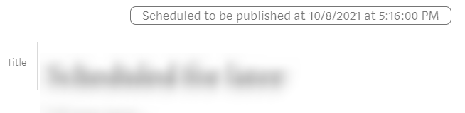

Scheduled for Publication
If you have a story submitted to a publication, this extension checks whether it is scheduled for publication.
If you have a story submitted to a publication, this extension checks whether it is scheduled for publication.
If the story is scheduled, your edit-story page will look like this: 
If you story is not scheduled, then nothing is shown.
Want to see which of your articles are Distributed for Further Distribution (formerly known as curated)? Check with extension.